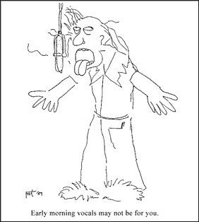

|
Lunch With The Fatman | 1, 2, 3
"Preparing Your Instruments for the Studio Part 2"
Hi. Sit down. What are you having? Welcome to Lunch with the Fat Man.
In the February issue of the Glitch News, we got our old instruments ready for the studio. We boiled the bass strings, stretched the new guitar strings, and put the keyboard player in charge of remembering the 2" tape. We put a six-pack of sodas by the door with the tuner and chessboard, and we made a cassette tape of our favorite tempi for the songs we're going to shred. Postponed, but not neglected were the drummer and vocalist’s preparations for the recording date.
In all my fatness, I still care about you, my readers, and I sincerely hope you didn't have a session between February and today, and kick your drummer and vocalist out of the band as a result of their comparative ill-preparedness. If it's not too late, here's my advice to them.
VOCALISTS
Your job is simply to know and understand the factors that make your voice right, and make sure they are all present for the session. You are lucky that you have an instrument that you don't have to lug around in the back of a truck. But the price you pay is that:
 1. When the band goes shopping for new toys, you can't buy a new, hot vintage '50s-style replacement pickup for your voice, which might make you the coolest singer for only 70 bucks, because it's just like the one that David Lee Roth uses, and
2. More to the point, you have to know exactly what your limitations are.
Some people have to drink tea when their voice gets tired. Some have to drink water. Some drink lemonade, some take lemon or honey in their tea, some mix lemon or honey in their water. Some need a small shot of Southern Comfort. Some actually smoke cigarettes. Some have to sing the night before, some have to avoid singing for a week. Some people can't sing in the morning. OK, most people can't sing in the morning, but some people's mornings end at 10:00, and some people’s end at 5:00.
You have to be certain that your optimum conditions are met at the studio, and only you can know what they are - so make a point of knowing. You don't want to agree to a 10:00 AM vocal session, only to end up having the $40/hour engineer laugh at your feeble attempts to croak out your cover of "Midnight at the Oasis."
So watch the schedule, and bring your tea, and your own lemon. I've been in studios that don't keep fresh lemons in stock.
DRUMS
You drummers have the widest set of variables - you can spend days or minutes, cents or megabucks preparing your instrument for the studio, and seldom is any of your effort wasted. Especially these days, people seem to notice drum sounds. Decide what you can afford in time and money, and do what you can, but don't flake out. Every time a drummer blows off tuning his drums, it's a black eye for your breed.
Here's a list of drum improvements in order of importance, NOT in order of execution:
1. Tune 'em up. It costs nothing but time, and since you’re the timekeeper of the band...
Extensive research with My Brother Dave Sanger The Two-Time Grammy Award Winning Drummer in Asleep At The Wheel has led me to a few drum tuning tricks over the years - I’ll share them with you two or three issues hence. If you don't know how to tune drums, ask any drummer. If you don't know any drummers, just fiddle around 'til they sound good. Hint: Don't use those internal dampers. Use duct tape stretched across from one side of the rim to the other, so it's not touching the head. Then poke just enough of it down to touch the head to sound good. If it starts to sound dim, just peel a little back up.
The best way to get a good sound is to compare your set to your favorite recordings, and keep track of what moves it closer to that sound. And remember, even though the gated reverb will make you sound just like Phil Collins, your drums really have to sound good in the first place.
2. Get new heads. At least replace the heads that have deep dents, but if you're feeling rich, replace them all. If you have trouble tuning your drums, try hydraulic heads - they're a pretty foolproof way of getting "that good sound."
3. Oil your squeaky pedals.
4. Polish your cymbals. They will sound much brighter, which is almost always better. One company in California puts Zud cleanser (available at the grocery store) in bottles marked "Cymbal Cleaning Compound" and cleans up.
5. Remove those silly internal dampers entirely. They just rattle around in there, dissipating your natural resonances and like that. Loose 'em.
Bring a drum rug, spare sticks, oil, duct tape, small blankets and pillows for damping, and a drum key.
Oh yeah, and bring the May issue of Skreed to your next rehearsal, so the other members of your band can get hip.
Say, this was great. Let's have lunch more often.

|